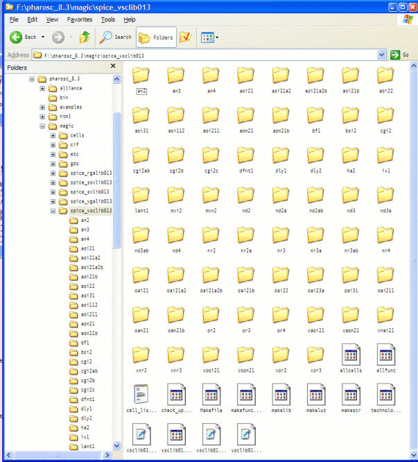

| vlsitechnology.org /Windows help /Spice characterisation | |
Spice characterisation | |
Linux help
Windows help
Linux Live CD
The files for the Spice characterisation of the different libraries in a generic 0.13µm technology are in
pharosc_8.3/magic/spice_rgalib013 pharosc_8.3/magic/spice_ssxlib013 pharosc_8.3/magic/spice_sxlib013 pharosc_8.3/magic/spice_vgalib013 pharosc_8.3/magic/spice_vsclib013 pharosc_8.3/magic/spice_vxlib013 |
They have been put here because Magic has been used to extract the layout to a Spice subckt.
The characterisation is done in two steps. The first is a Spice run of the CIR files in the sub-directories. The second is an elaboration of the data produced to write the vsclib013.lib and other Synopsys Liberty format .LIB files, the Alliance .VBE files and the web data sheets.
The Spice simulator used is Winspice, so this part runs fine under Windows. The elaboration uses Unix scripts, so a program like cygwin must be installed for these to run.
I have used the following steps for Windows Spice characterisation on a library on a USB stick. (replace /f/pharosc_8.3 by your library location). These are commands entered into a cygwin window.
$ PATH=/c/WINDOWS/system32:$PATH |
$ cd /f/pharosc_8.3/bin $ cp wspice3.bat wspice3 $ PATH=/f/pharosc_8.3/bin:$PATH |
cmd /c "start /wait /min /low \ c:/WinSpice/wspice3.exe -b $1" |
$ cd /f/pharosc_8.3/magic/spice_vsclib013/aoi31 $ ./allaoi31 |
Contents of the spice_vsclib013 directory. 